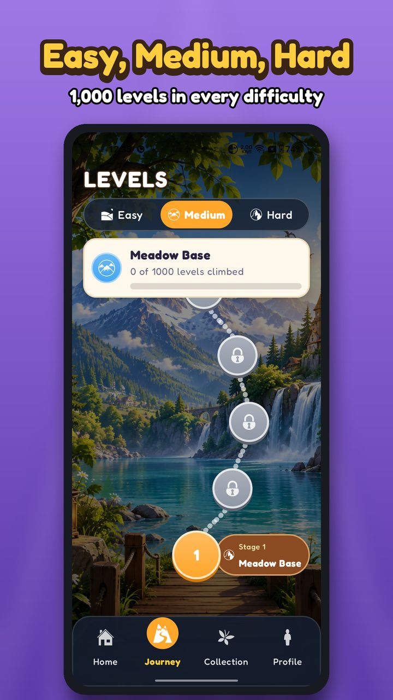

Quick answer: To solve word connect puzzles faster, find the short 3-letter words first, use letters already shown in the grid, count the boxes to know each word's length, try common endings like -ED, -ER and -ING, and shuffle the letter wheel when you're stuck. Save hints for the last, hardest word.
Key facts
- Start with 3-letter words
- Use crossing letters in the grid
- Try endings: -ED, -ER, -ING, -LY
- Shuffle the wheel when stuck
- Word Game Hills: 3,000 levels with word meanings
How Word Connect Games Work
You get a wheel of letters, for example C, T, A, K. Swipe across the letters to spell a word, like TACK or CAT. Every correct word fills its place in the crossword grid. Find all the words to finish the level.
9 Tips to Solve Word Puzzles Faster
- 🔤Start with short words. Find all the 3-letter words first. They fill the grid and give you letters for the longer words.
- 🧩Use the grid. Letters you have already found show up in crossing words. A word with a known first or last letter is much easier to spot.
- 📏Count the boxes. The grid tells you how long each missing word is. Look for a word that fits that exact length.
- 🔚Look for common endings. Try endings like -ED, -ER, -ING, -LY and -EST with the letters you have.
- 🔜Look for common starts. Try RE-, UN- and DE- at the front of a word.
- ➕Try plurals and tenses. If you see an S or ED, a word you already found may have another form, like RATE and RATED.
- 🔀Shuffle the wheel. Seeing the letters in a new order often makes a hidden word jump out.
- 🗣️Say it out loud. Sounding out letter pairs like TH, CH, SH and ST helps you find words faster.
- 💡Save hints for the last word. One revealed letter is often enough to solve the hardest word in the level.



Learn New Words While You Play
Word puzzles are a fun way to practise spelling and meet words you don't use every day. To learn more from every level:
- 📖Read the meaning of each new word you find, not just the letters.
- ✍️Use one new word today in a sentence or a message.
- 🔁Review at the end of the level. A quick look back helps the new words stick.
- 🎯Pick the right difficulty. If every level is too easy, move up. If it's frustrating, step down.
Word Game Hills: A Calm Word Puzzle Adventure
Word Game Hills is a relaxing word puzzle set in a mountain valley. It has 3,000 levels (1,000 each in Easy, Medium and Hard), and it shows the meaning and word type of every word you find. The tools match the tips above:
- 💡Hint reveals one letter.
- 👁️Peek shows all the hidden letters for a moment.
- 🔀Shuffle mixes up the wheel for a fresh view.
- ⭐Finish quickly to earn 3 stars and extra coins.
- 🦋Collect a new mountain animal, bird, plant or place every 10 levels.
🎁 Look for bonus words too. Extra words that aren't in the grid still count in Word Game Hills and give you bonus coins.
Frequently Asked Questions
How do I get better at word connect games?
Find the short words first, use letters already in the grid, try common endings like -ED and -ING, and shuffle the wheel when you're stuck.
Do word games help vocabulary?
They are a fun way to practise spelling and meet new words. Reading each word's meaning, as Word Game Hills shows you, helps the words stick.
Can I play Word Game Hills offline?
Yes. Word Game Hills plays offline and needs no account.
How many levels does Word Game Hills have?
3,000 levels: 1,000 each in Easy, Medium and Hard.
Relax, Spell & Climb
3,000 calm word levels with meanings, stars and collectibles. Free and offline.

Written by Kamal Kakkar
Founder of Yunok Tech and Android developer with 10+ years of experience at Nagarro and KareXpert, building apps for the healthcare and banking domains. Kamal also teaches Kotlin & Jetpack Compose.
LinkedIn → Medium → Android Course →